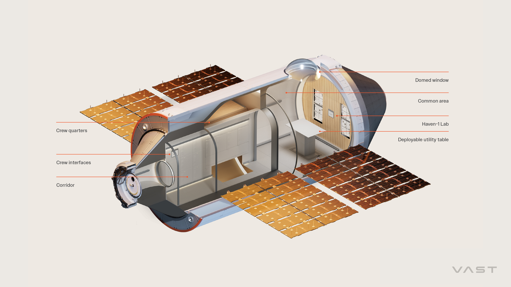
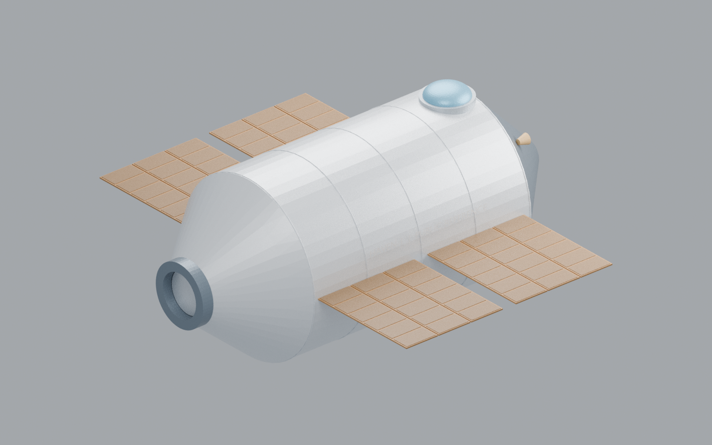
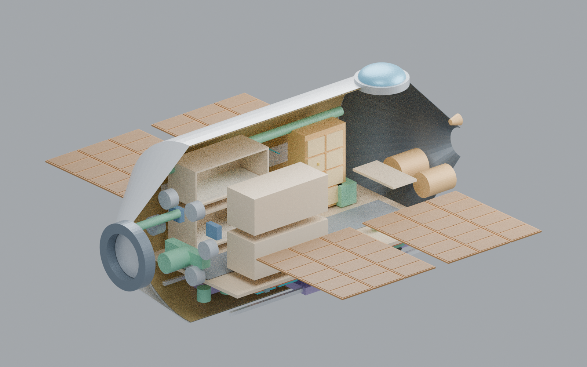
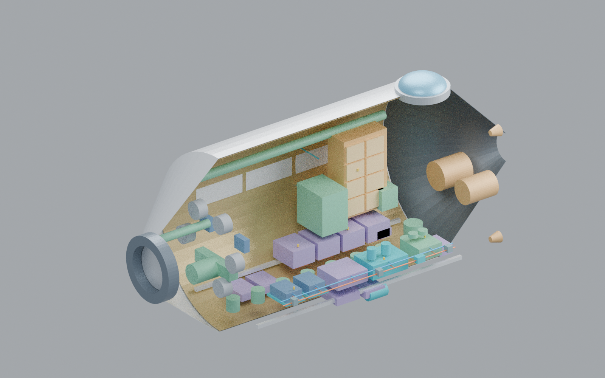
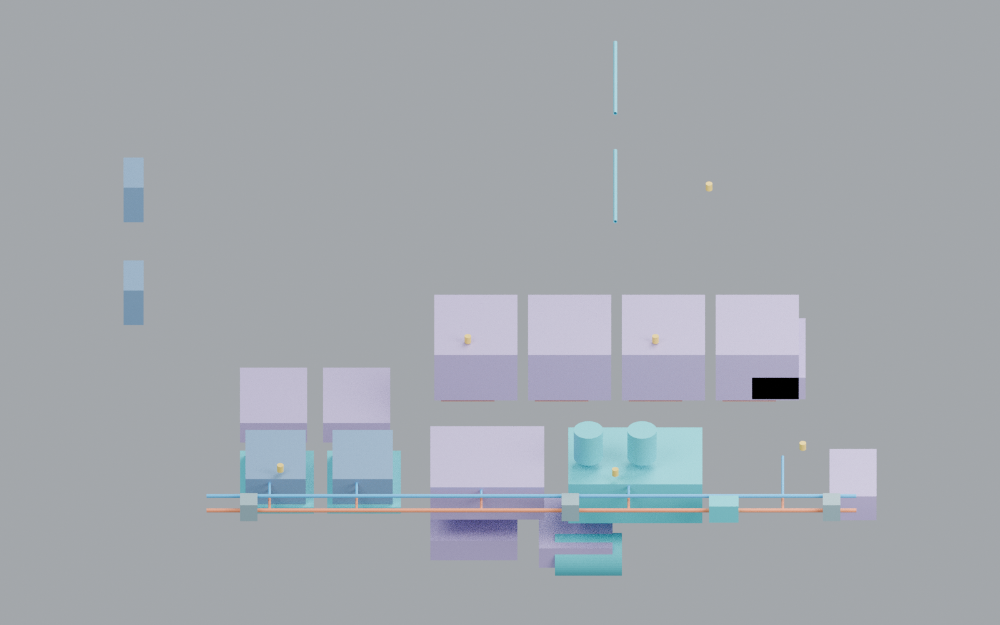

Loading CAD…Click a component to inspect
X · longitudinal Y · lateral Z · up / metres
Loading the CAD assembly…
Drag to rotate · Right-drag to pan · Scroll or pinch to zoom
As assembled
Drag to rotate · Right-drag to pan · Scroll or pinch to zoom
This stage establishes an editable vehicle assembly for the next thermal and fluid studies. Review the body proportions, window and docking orientation, equipment access, and subsystem grouping before assigning thermal loads or boundary conditions.

The assembly separates hardware identified in Vast’s public material from proposed components added to make an independent thermal study possible. A pictured subsystem does not establish its exact dimensions, installation, materials or heat load.
Examples include the radiator, thermal pump tray, cold plates, batteries, avionics, life support and cabin ventilation. Component details and placement may still be representative.
Heater patches, sensor placements, thermal-interface layers, insulation zones and control details provide candidate analysis interfaces. Their model representation is not confirmation of Vast’s flight implementation.
Dissipation and duty cycles, coolant/fan data, contact conductance, optical properties, orbital environment and test correlation are required before quantitative thermal or CFD conclusions.
These are views of this study’s model. They are separate from the official reference artwork above.




Stage 01 contains geometry only. No solved temperatures, cooling capacity, pressure drops or flight-performance claims.